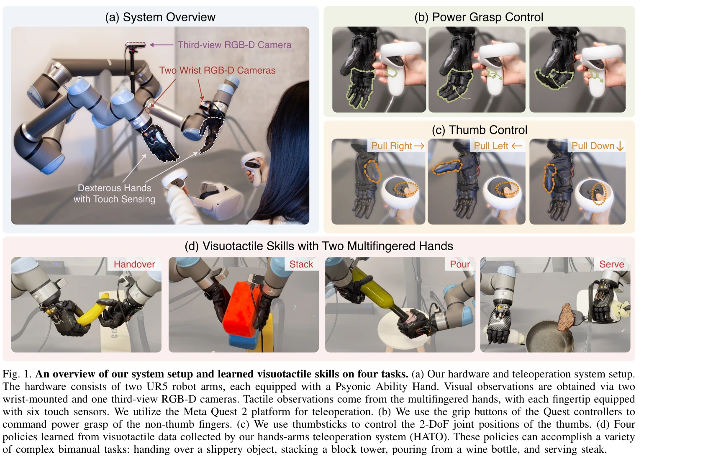
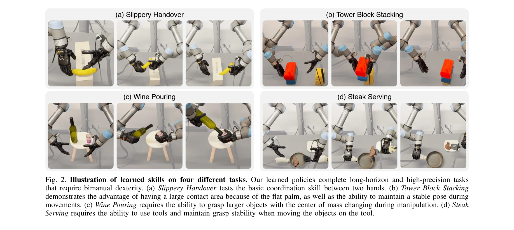
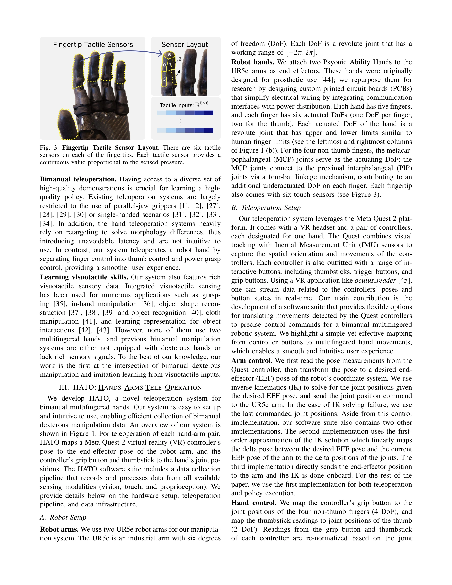

저자: Toru Lin, Yu Zhang, Qiyang Li, Haozhi Qi, Brent Yi, Sergey Levine, Jitendra Malik | 날짜: 2024-04-25 | URL: https://arxiv.org/abs/2404.16823

Fig. 1. An overview of our system setup and learned visuotactile skills on four tasks. (a) Our hardware and teleoperatio
VR 기반 저가형 텔레오퍼레이션 시스템 HATO와 촉각 센서가 장착된 의족 손을 활용하여 양손 다중지 조작 로봇이 시각-촉각 데이터로부터 인간 수준의 민첩한 조작 기술을 학습하는 시스템을 제시한다.

Fig. 2. Illustration of learned skills on four different tasks. Our learned policies complete long-horizon and high-prec

Fig. 3. Fingertip Tactile Sensor Layout. There are six tactile
총평: 본 논문은 양손 다중지 조작 분야에서 하드웨어 혁신(의족 재목적화)과 접근성 높은 텔레오퍼레이션 시스템(HATO)을 통해 visuotactile learning의 새로운 경계를 개척했다. 촉각 센싱의 중요성을 실증적으로 보여주고 효율적 데이터 수집 및 정책 학습을 달성하여 로봇 조작 분야에 상당한 기여를 한다.